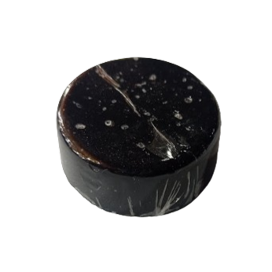

Jabones hidratantes

Formulados para aportar una hidratación intensa a la piel. Suelen contener ingredientes como aceites naturales (coco, oliva, almendra) y mantecas (karité, cacao) que ayudan a mantener la piel suave y nutrida, evitando la sequedad y la deshidratación.
- Jabon de Aloe Vera
- Jabon de rosas
- Jabon de romero
Jabones antiacné
Diseñados para combatir y prevenir el acné. Estos jabones suelen incluir ingredientes como ácido salicílico, aceite de árbol de té, o carbón activado, que ayudan a limpiar profundamente los poros, reducir el exceso de grasa y calmar la inflamación.
Jabones para líneas de expresión
Enriquecidos con ingredientes que ayudan a reducir la apariencia de las líneas finas y arrugas. Pueden contener antioxidantes como la vitamina E, colágeno, y aceites esenciales que promueven la firmeza y elasticidad de la piel.
Jabones para regenerar la piel
Enfocados en la renovación y reparación de la piel dañada o envejecida. Estos jabones a menudo incluyen ingredientes como retinol, ácido hialurónico, o extractos botánicos que fomentan la regeneración celular y mejoran la textura de la piel.
Jabones aclarantes
Diseñados para unificar el tono de la piel y reducir manchas. Suelen contener ingredientes como vitamina C, ácido glicólico, o extractos de plantas como la papaya, que ayudan a iluminar la piel y disminuir la hiperpigmentación.
Jabones exfoliantes
Enriquecidos con ingredientes que ayudan a reducir la apariencia de las líneas finas y arrugas. Pueden contener antioxidantes como la vitamina E, colágeno, y aceites esenciales que promueven la firmeza y elasticidad de la piel.
¿Quiénes somos?
Nuestra Misión
En Tlalli, creamos productos artesanales y ecológicos cuidando de la piel y el medio ambiente. Utilizando ingredientes naturales y técnicas tradicionales, fomentando la sostenibilidad y respeto por la naturaleza.
Nuestra Visión
Queremos ser líderes en productos artesanales y ecológicos, destacando la excelencia en cada producto de Tlalli. Buscamos convertir la rutina en un lujo conectado con la naturaleza.
Novedades
Cónoce nuestros nuevos productos
Velas artesanales
Separadores de libros (papel reciclado)
Talleres 
- Taller de Jabones Artesanales
- Taller de Shampoo en Gel
- Taller de Desodorantes Orgánicos
- Taller de Velas Artesanales
- Taller de Papel Reciclado